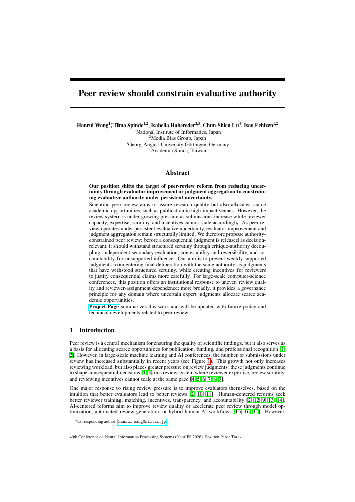

Resources
The starting point.
And the ideas behind it.
Our foundational position paper and presentation materials introduce the principles and a possible human–AI mutual-supervision design.

Read the paperFoundational paper · NeurIPS 2026
Peer review should constrain evaluative authority
Accepted · NeurIPS 2026 Position Paper Track
We propose four principles for governing consequential review judgments under persistent evaluative uncertainty: critique–authority decoupling, independent secondary evaluation, contestability and reversibility, and accountability for unsupported influence.
The paper develops the institutional argument, presents a dual-track human–AI mutual-supervision design and outlines a research and deployment roadmap.
Presentation materials
Explore the argument.
Reference
Cite the paper.
Use the arXiv preprint citation while the formal proceedings version is pending.
BibTeX
@article{wang2026peer,
title={Peer review should constrain evaluative authority},
author={Wang, Hanrui and Spinde, Timo and Habereder, Isabella and Lu, Chun-Shien and Echizen, Isao},
journal={arXiv preprint arXiv:2610.28646},
year={2026}
}